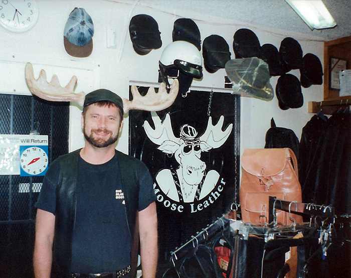

Moose Leather was a leather store on Upas St here in San Diego back in the 90's. Besides custom work, we also had off-the-rack items, and offered alterations and repair. Due to the current situation with Covid-19, I am resurrecting my custom-leather business.
I am working out of my home currently and can alter, repair, or create something new for you. I have quite a bit of experience with chaps, vests, pants, shirts, harnesses, and the like. You can see some of my work by clicking Custom Work. And on occasion, I will have various other items for sale under the Off-The-Rack button. And, who knows, maybe I'll figure out a way of bringing back our consignment rack that was quite popular at the time.
Feel free to text or call me on my cell at (619) 964-1865 and let me help you create your vision!